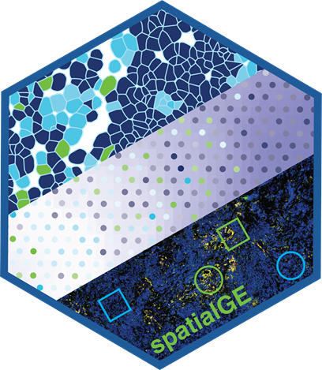
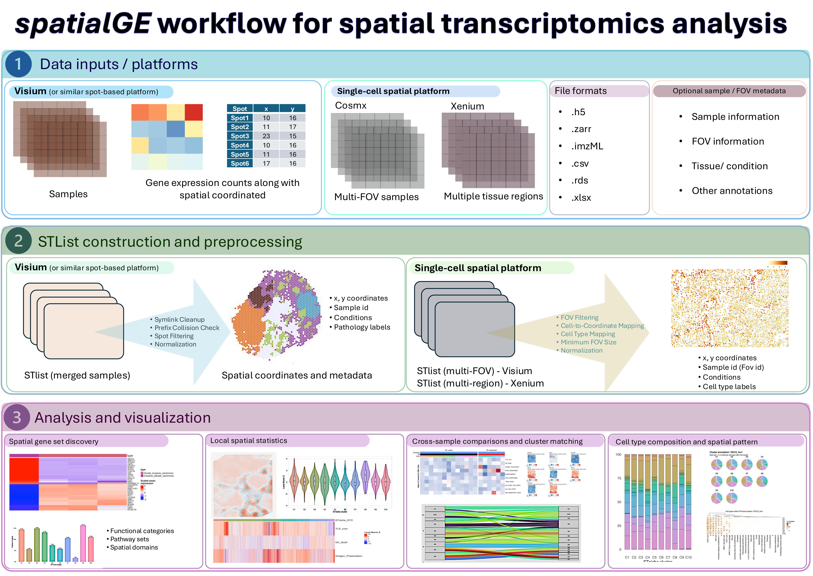

An R package for visualizing and analyzing spatially-resolved transcriptomics data from spot-based platforms (e.g., 10X Visium) and imaging-based platforms (e.g., Xenium, CosMx). Data and results from multiple tissue sections are stored in a single STlist (Spatial Transcriptomics List) object.
STplot, gene_interpolation, STplot_interpolation for exploring gene expression in spatial context.SThet, compare_SThet to quantify spatial uniformity (Moran’s I, Geary’s C) and relate it to sample metadata.STclust for spatially-informed hierarchical clustering.STenrich to detect gene sets with spatial patterns, optionally within a tissue domain.STgradient to find genes whose expression varies with distance to a tissue domain.STdiff for mixed models with spatial covariance, plus non-spatial Wilcoxon and t-tests.STniche to identify tissue niches from the local spatial organization of gene sets, with plot_stniche for visualization (see below).

STniche detects niches, local microenvironments where particular cell types and molecular programs co-occur, from spot-based (Visium) and single-cell (CosMx) data. Niche labels are shared across samples analyzed together, so they are directly comparable. plot_stniche visualizes the results.
res <- STniche(x = stlist, gene_sets = gene_sets,
samples = names(stlist@spatial_meta),
ks = 2:10, knns = 22, out_i = TRUE)
plot_stniche(res[[1]], type = "clusters")The method, all plot_stniche plot types, and worked Visium (GSE175540) and CosMx (ccRCC) examples are in the STniche vignette: vignette("vignette_stniche", package = "spatialGE"), also available under Tutorials below.
| Platform | How to load |
|---|---|
| 10X Visium |
STlist() on one Space Ranger folder per sample |
| Xenium | Load with Seurat::LoadXenium(), then STlist() on the Seurat object |
| CosMx |
STlist() on a Seurat object |
| Any other platform |
STlist() on a counts matrix plus a coordinates table (generic format) |
# Generic format: counts (genes x spots/cells) and coordinates (libname, ypos, xpos)
st <- STlist(rnacounts = list(sample1 = counts),
spotcoords = list(sample1 = coords),
samples = "sample1")Step-by-step import instructions for each platform are in the Basic functionality tutorial (section Loading data from other platforms): vignette("basic_functions_vignette", package = "spatialGE").
STniche and plot_stniche for spatial niche detection on Visium and CosMx data.STlist by sample with x[i]; length(x) returns the number of samples.as_Seurat() for converting an STlist back to Seurat.STlist_to_disk(), STlist_to_memory()).filter_data, STdiff, STgradient and SThet now scale to Xenium- and CosMx-sized samples.filter_data() reports what it removed.Version 2.0.0 also includes behavior changes that may affect existing code (for example dim() on an STlist, errors for unmatched genes or domains, and the order of spots) and many bug fixes. These, together with earlier releases, are listed in NEWS.md.
options(timeout = 9999999) # Avoid connection timeouts when downloading from GitHub
devtools::install_github("fridleylab/spatialGE")If you use spatialGE, please cite:
Ospina, O. E., Wilson, C. M., Soupir, A. C., Berglund, A., Smalley, I., Tsai, K. Y., Fridley, B. L. (2022). spatialGE: quantification and visualization of the tumor microenvironment heterogeneity using spatial transcriptomics. Bioinformatics, 38, 2645-2647. https://doi.org/10.1093/bioinformatics/btac145
Ospina, O. E., Manjarres-Betancur, R., Gonzalez-Calderon, G., Soupir, A. C., Smalley, I., Tsai, K. Y., Markowitz, J., Khaled, M. L., Vallebuona, E., Berglund, A. E., Eschrich, S. A., Yu, X., Fridley, B. L. (2025). spatialGE is a user-friendly web application that facilitates spatial transcriptomics data analysis. Cancer Research, 85(5), 848-858. https://doi.org/10.1158/0008-5472.CAN-24-2346
When using STdiff, please also cite:
Ospina, O. E., Soupir, A. C., Manjarres-Betancur, R., Gonzalez-Calderon, G., Yu, X., Fridley, B. L. (2024). Differential gene expression analysis of spatial transcriptomic experiments using spatial mixed models. Scientific Reports, 14, 10967. https://doi.org/10.1038/s41598-024-61758-0